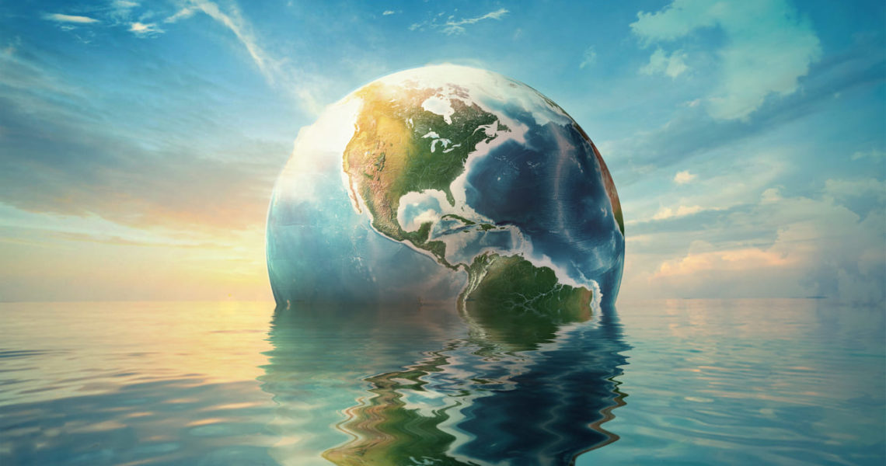
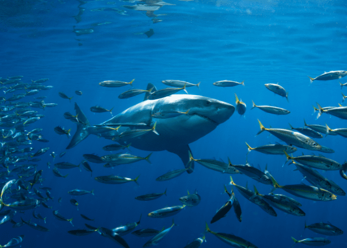
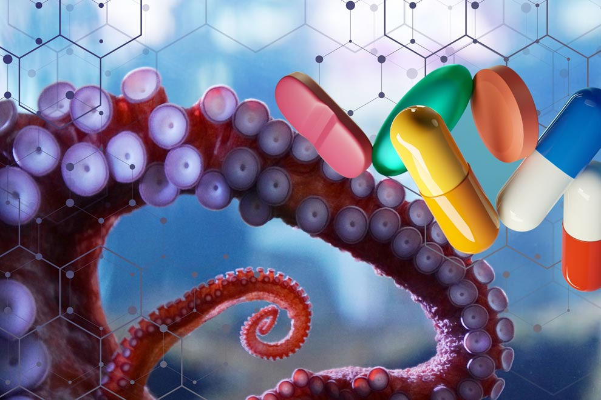
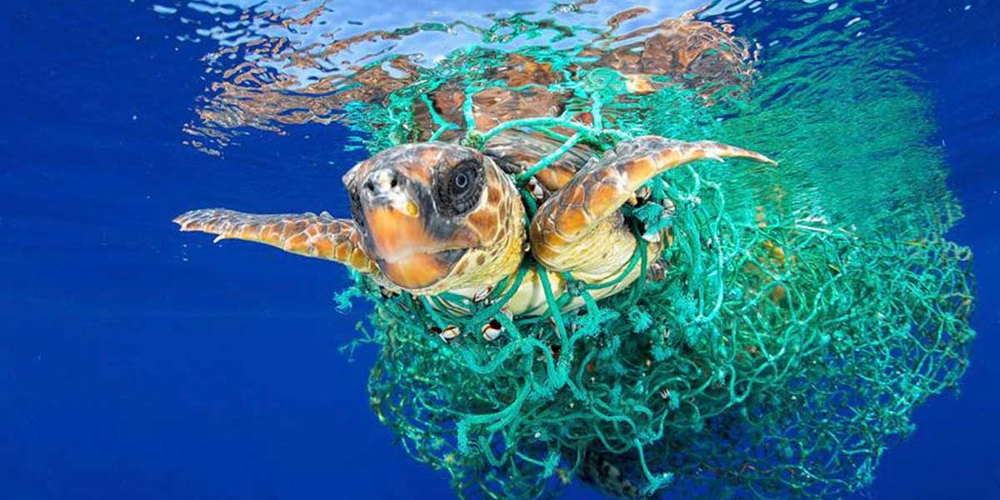

🐠 ¿Qué busca este objetivo?
El Objetivo 14 quiere que protejamos los océanos y mares del planeta y que usemos sus recursos de manera inteligente y sin dañarlos. ¡Los océanos son esenciales para la vida!
🧬 ¿Cómo nos afecta?
- Si los océanos se dañan, también nuestra salud y alimentación están en riesgo.
- Muchos medicamentos vienen del mar.
- La pesca es el trabajo de millones de personas en el mundo.
- Para muchos países, el turismo en la playa es su fuente principal de dinero.
🎯METAS DEL OBJETIVO


⚠️PROBLEMAS Y SOLUCIONES
| Problema | ¿Como ayudar? |
|---|---|
| Contaminación por plásticos | Usar menos plástico, reciclar |
| Calentamiento del mar | Cuidar la energía que usamos |
| Pesca excesiva | Elegir pescado responsable |
| Turismo descontrolado | Cuidar playas y no dejar basura |
🌍 ¿SABIAS QUÉ...?

🌊 Los océanos cubren tres cuartas partes del planeta y tienen el 97% del agua de la Tierra.

🐟 Casi un millón de especies viven en el océano, ¡y aún hay muchas más por descubrir!

💊 Los animales marinos podrían ayudar a crear medicinas para el futuro.

🐠 ¡La vida en el mar está en peligro! La contaminación, el calentamiento y la pesca excesiva están dañando los arrecifes, los peces y más.